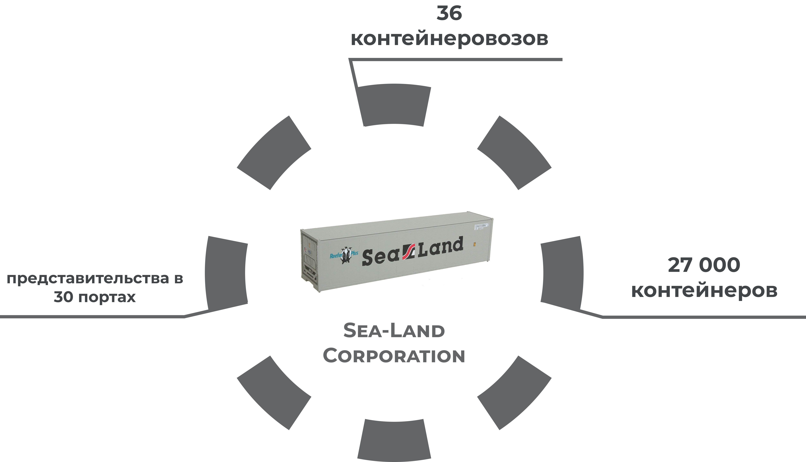

4 этап Развитие компании Sea-Land
Для развития компании Sea-Land Service нужны были инвестиции, и Маклин сделал предложение крупной табачной компании Reynolds Tobacco Company.
- 1969 Reynolds покупает Sea-Land Service Inc., а Маклин вкладывает свой капитал в Reynolds и становится ее крупным акционером, заняв почетное место в совете директоров.
Благодаря инвестициям от компании Reynolds, Маклин покупает большие и быстроходные корабли, контейнеровозы высокого класса, строит большие терминалы
- 1970 для снижения затрат на топливо, Маклин приобретает American Independent Oil Co.
- 1977 Маклин выходит из совета директоров Reynolds и покидает компанию.
- 1984 Sea-Land Corporation становится независимой, а затем и ведущей транспортно - судоходной компанией с мировым именем.

Глобализация экономики послужила толчком для развития контейнерных перевозок.
Сейчас в рейсах постоянно находятся около 3500 контейнеровозов, а на их борту - более 15 000 000 контейнеров.
Малкольм Маклин дожил до грандиозного успеха своей компании.